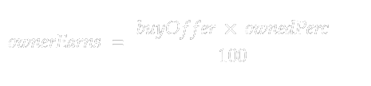

#
How It Works
After reading this page, you will have an understanding of how Smartarists works. From the basics (how to earn, what you are buying, etc), to the more advanced features (pool accounts, unique nfts marketplace, rewards for the unprofitable, etc).
Let's start!
#
Basics
#
What will you be buying?
Pay attention here, this is one of the most confusing aspects of the project if you are used to buying standard NFTs.
When buying a smartartistsNFT (saNFT), you will mainly be doing 4 things:
Get the saNFT issued to your wallet .Get a unique "buyer NFT" associated to your wallet .Reward the Artist and the previous owners with your .buy_offerFund the pool account with a % of your .buy_offer
Each of these 4 steps is a key part of the project in terms of dynamicity, and will be explain in detail in the next sections.
#
Get the saNFT issued to your wallet
saNFTs don't have a price, you can decide for how much XLM you want to buy them: that will be your buy_offer. What is the logic behind this? Let's find out!
When you get a saNFT issued to your wallet, the Stellar network will store on-chain the following information:
User bought testSaNFT for a buy_offer of n XLM
This info will then be used to build an on-chain database of owners with how much each of them owns (their buy_offer) compared to the total of XLM that have been spent on that saNFT.
For example, if a total of 900XLM have been spent on testSaNFT, and you bought it with a buy_offer of 100XLM, you would own 10% of testSaNFT's ownership network as:
- total XLM on testSaNFT are 900 + your buy offer (100XLM) = 1000XLM
- you own 100XLM of 1000XLM, that's exactly the 10%
The more you own in the ownership network of a saNFT, the more you earn as you'll discover in the Reward the Artist and the previous owners with your buy_offer section. As you can see, the higher your buy_offer is, the more you'll possibly earn. That's why each buyer can decide their buy_offer.
#
Get a unique "buyer NFT" associated to your wallet
As you can understand, if the buyer can decide the price for the saNFT they're buying, there will be multiple owners for a single saNFT. This means that whenever a new user buys a new saNFT, they are buyer number n. When a user buys a saNFT, the platform will assign to their wallet a unique "nbuyerNFT".
That will be unique for your wallet, and will also become a source of profits for you in two different ways (see in the linked sections):
- Marketplace
- Artist's Rewards
We are always working on new features, the ways to earn from this might even become more 😍
#
Rewarding
The process of rewarding owners is quite simple and only requires basic maths to be understood. When you(user A) buy a saNFT, the platform will reward the previous owners with your buy_offer.
Each owner gets rewarded differently, depending on how much they own of the saNFT's ownership network (if you don't know what this term is, give another read to the
But how much does each owner receive? This very simple formula covers it:
where:
- buyOffer is your buy_offer
- ownerdPerc is the percentage of the ownership network that the owner owns
#
The higher your buy_offer, the higher your owneedPerc, the more you'll earn for every new buyer.
The process of rewarding artists is even simpler. Each time a new user buys the artist's saNFT, a fixed percentage (artist fee) of your buy_offer will go straight into the artist's wallet, while the remaining will go to reward the owners.
It's obvious that the higher the higher the artist fee, the less owners will earn. So, how much in % is this artist fee?
It's decided by the artist themselves. This is what I liked about this platform when I started designing it: it allows artists to have a completely dynamic strategy planning (as you'll also see in the Advanced features section).
Anyways, doesn't this mean that the artist could set a fee of 99% and the owners would only receive 1%? Sure, but who's going to buy something that can profit them a maximum of 1%? No one. That's why the artist has to find a range of setting their fee that will also benefit the owners, so both the owners and the artist can profit.
#
Funding the pool account
As you can see, an owner earns as long as there is always a new buyer ready to buy. While this is the principle behind trading standard NFTs, but I wanted something more for SmartArtists, I wanted a layer of dynamism which incentivizes new users to buy, by rewarding them.
#
How it works:
When a User buys a saNFT, a percentage of the buy_offer will be sent to a so-called pool account (a stellar account). The more buyers, the higher will be the value of this pool account.
Each "tot time" (tot stands for period, can be each day, each week, each month, etc; chosen by the artist) this account will be equally divided between the n owners with the highest owned percentage of the latest k owners. (the artist will set these two parameters).
Who are the k owners?
Latest k owners are the ones that have bought in a k period of time before tot time. For example, if k is 3 days and tot time is 1 month, the latest k owners will be the ones that have bought in the last 3 days.This will ensure a high volume for that saNFT duing the k period, as there will be users buying to get a part of the pool.
But there will also be buyers that buy before the k period trying to anticipate big volumes, as they know there will be more buyers next.
#
This will bring interesting developings, also from a purely trading-based perspective.
#
Advanced features/concepts
#
Rewards for unprofitable owners
⚠️ This could change ⚠️
this is still highly experimental, info within this paragraph might change in the future
Investing always carries some risk
But what if you are investing in something that rewards you if you're not able to make a profit? That sounds both awesome and nonesense, so let us explain it better.
#
Holding a 5% of the pool account
If you've read the previous paragraphs, you should have an understanding on how pool accounts work. Now, they can also be leveraged to offer a reward to those who were not able to make a profit.
Each "tot time" round, a 5% of the pool is reserved to be equally distributed between the users that have not yet profited from their investment. But owners will obviously not be able to get these rewards whenever they want, before claiming these rewards, these two conditions must be met:
Still need to complete the docs, return in a couple days an you'll find this updated!
Once rewards are decided to be claimed, all the non-profitable owners will receive their rewards. But it may happen that not all the non-profitable owners agree to claim their rewards, some might want to wait until the rewards get higher, while other might want to claim the rewards right away. How will the platform decide wheter to distribute rewards or not?
Always using on-chain data, smartartists will:
- Calculate the total amount of XLM the non-profitable owners are losing (
total_loss) - Build a list of the non-profitable owners along with how much they are losing compared to the total loss (
owner_loss) - If more than 50% of the
total_lossdecide to claim rewards, the rewards will be distributed.
This feature though is still in a feature-shaping phase, so all this can change in the future. But dont worry, when the first saNFTs will be issued, this feature will be complete and won't change.